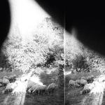
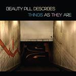
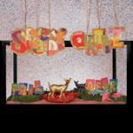
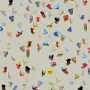

Music Reviews
-

Mumford & Sons Wilder Mind
Mumford & Sons are back with a new album! And it doesn't feature any barn-stomping whatsoever!
Andrew Ciraulo is a hootin' and a hollerin'... -
Best Coast California Nights
For their major-label debut California Nights, the duo of Bethany Cosentino and Bobb Bruno try to tackle a modern indie-pop sound from a somewhat different angle: by returning to a narrower sonic palette, albeit one that’s heavier and more complex than anything they’ve attempted before.
Brad Hanford reviews... -

Godspeed You! Black Emperor Asunder, Sweet and Other Distress
Previously known as 'Behemoth', Godspeed You! Black Emperor's latest album has been a regular feature of the band's live sets since 2012. But was the studio version worth the wait?
Mark Davison reviews... -

Torres Sprinter
The latest by the Nashville singer-songwriter gets to the heart of the matter with open-hearted directness, and in balancing the coarse with the refined there’s a clearer sense of what Scott wants to find even if she struggles to understand the conditions that affect her most deeply.
Juan Edgardo Rodríguez reviews... -

Beauty Pill Beauty Pill Describes Things As They Are
Beauty Pill Describes Things As They Are interrupts 11 years of silence from D.C. rock band, Beauty Pill. It’s a very welcome return.
Sean Caldwell reviews... -

METZ II
METZ's II might seem all-too familiar at first to those who were fans of their raucous debut, but that only means that METZ haven't lost the smallest iota of their unequivocal ferocity and power in crafting a follow-up.
Peter Quinton reviews... -

Passion Pit Kindred
Michael Angelakos has accumulated enough sugar and helium to produce his third LP as Passion Pit. Will you shelve it, or will it become a fixture in your playlists?
Ben Jones reviews... -
Nai Harvest Hairball
Sheffield duo Ben Thompson and Lew Currie sharpen their songwriting skills with straight-ahead rockers that never stray from the path of duty.
Juan Edgardo Rodríguez reviews... -

Speedy Ortiz Foil Deer
The nimbly deceptive melodies of Speedy Ortiz are back in the shape of a 2nd LP, and Sadie Dupuis' lexical wizardry is more impressive than ever.
Carl Purvis loves Speedy Ortiz... -

Lower Dens Escape From Evil
Lower Dens might have melted away a bit of their krautrock icy-ness for a more streamlined sound, but the dream-pop band's latest proves that superb, varied songwriting and perfectly honed aesthetics prevail no matter how familiar the tool-kit.
Peter Quinton reviews...